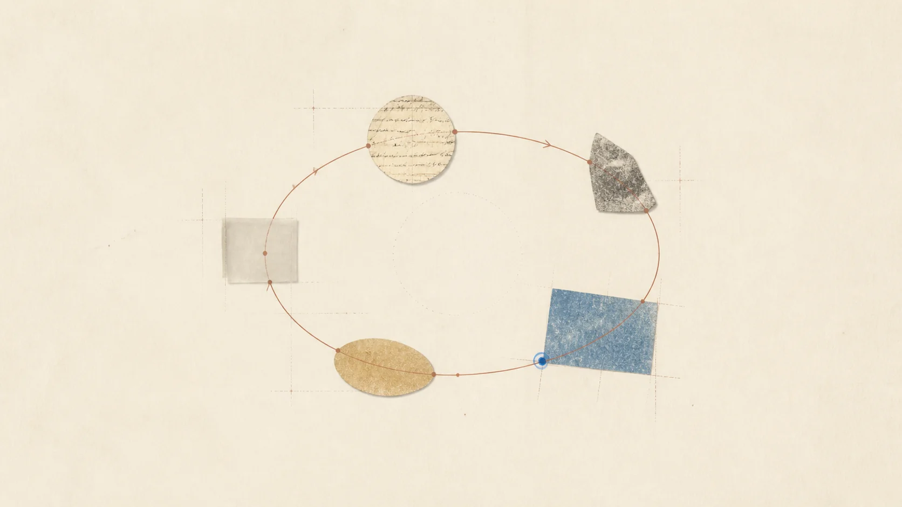

一个有用问题的构造。
区分真正打开一个想法的问题，和只是把它推迟的问题。
资料库
指南、工作笔记，以及帮助你更有意识地学习的清晰语言。

资料库如何组织
指南解释一个想法，方法描述一种工作方式，练习笔记记录我们在许多会话中观察到的事情。它们都指向同一件事：让下一次思考更容易开始。
指南
指南提供足够的背景，让你能提出下一个问题；即使只有十分钟，也能带走一点有用的东西。
方法
从开始、测试、回忆到修改，方法都是小习惯，最好和你正在学习的真实主题一起使用。
练习笔记
这些短文观察学习如何在导师中实际发生，是我们最接近现场笔记的一部分。